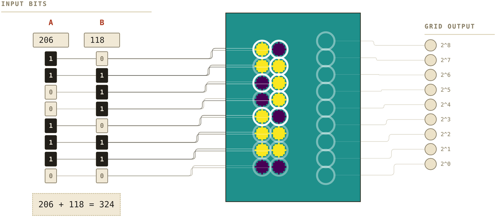

Iliya ZhechevSofia University
· Piotr WalasWarsaw University of Technology
ncpu.pages.dev
the idea
Neural cellular automata grow shapes. This one computes.
8-bit adder · 255 + 1 · one shared rule, 64 steps
the task
We draw the question on the grid.

Bright circle = 1, dark = 0. The answer has to appear on the right, which starts blank.
the rule
Classic NCA setup.
No global clock. No controller. No memory outside the grid.
it works
Addition is not a local operation.
239 + 33 = 272 · two separate carry runs
A cell sees a 7×7 window, so a carry cannot jump — it has to travel. Here two of them do, and they land last.
under the hood
We observed a carry wave.
visible channel
hidden channel 4
Same run, 255 + 1. One of the sixteen numbers each cell carries — the model invented it, with no target of any kind.
Red is above that frame's average, blue below. The front sweeping up and right is the carry.
the nice part
It runs wider than it was trained.
7 + 1 · 3-bit
5 + 6 · 3-bit
145 + 103 · 8-bit
Same model, same weights.
It was only ever trained on sums up to 3 bits.
The rule is local and the bits sit against a fixed edge, so nothing in it refers to how wide the problem is.
measured two ways
Bit-length extrapolation.
% of bits correctthe usual measure
4-bit
6-bit
8-bit
≤ 2-bit
96.5
93.9
91.9
≤ 3-bit
99.8
98.7
98.0
≤ 4-bit
100.0
100.0
99.7
≤ 6-bit
100.0
100.0
100.0
% of sums exactly rightevery bit, or nothing
4-bit
6-bit
8-bit
≤ 2-bit
93.0
82.8
74.6
≤ 3-bit
98.8
94.9
91.8
≤ 4-bit
100.0
100.0
98.8
≤ 6-bit
100.0
100.0
100.0
Rows: the widest sum the model saw in training. Columns: the width it was tested on.
128 random sums per cell, mean of 2 seeds. A sum can be 8 bits out of 9 right and still be the wrong number —
which is why the left table looks better than the model is.
try it
It all runs in the browser.
ncpu.pages.dev
Flip the input bits and watch the grid settle.
Scrub a rollout frame by frame.
Weights, code and the poster are all there.
Iliya ZhechevSofia University
· Piotr WalasWarsaw University of Technology